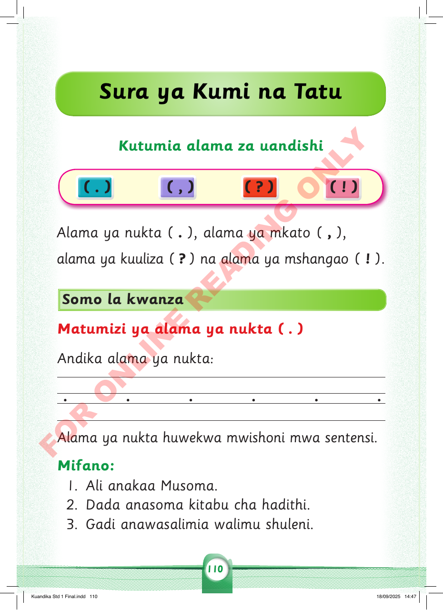

Sura ya Kumi na Tatu
Kutumia alama za uandishi
( . )
( , )
( ? )
( ! )
Alama ya nukta ( . ), alama ya mkato ( , ),
alama ya kuuliza ( ? ) na alama ya mshangao ( ! ).
Somo la kwanza
Matumizi ya alama ya nukta ( . )
Andika alama ya nukta:
• • • • • •
Alama ya nukta huwekwa mwishoni mwa sentensi.
Mifano:
1. Ali anakaa Musoma.
2. Dada anasoma kitabu cha hadithi.
3. Gadi anawasalimia walimu shuleni.